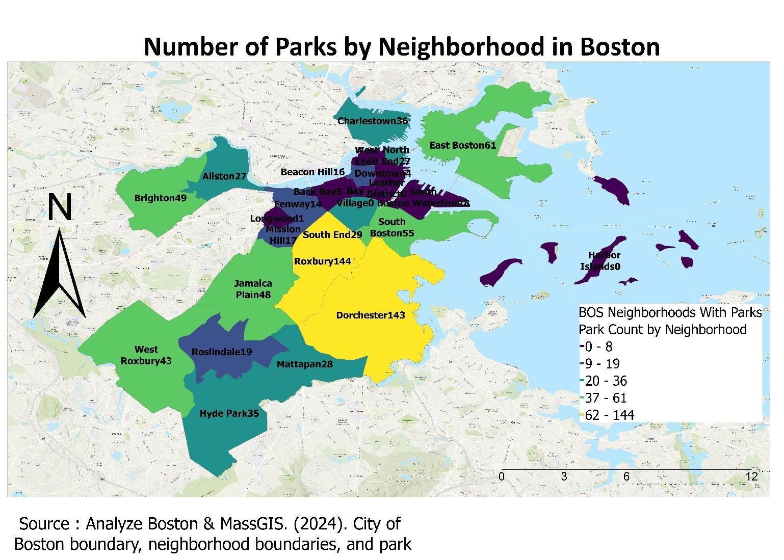
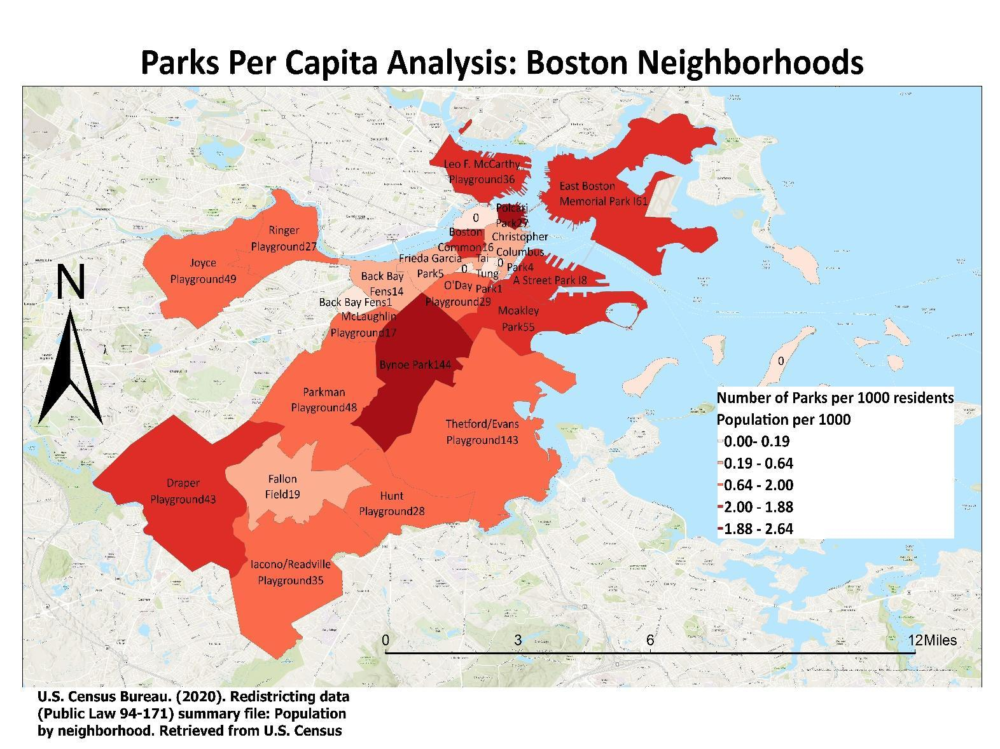

Urban parks are critical for physical activity, mental health, and social cohesion - but access is frequently unequal. Roxbury and Dorchester rank first and second in Boston for raw park count, yet their residents face significant green space inequities. This project asked: how can raw park counts mislead, and what does per-capita access actually reveal about equity in Boston?
Methods
Three datasets were combined: the City of Boston Neighborhood Boundaries Layer, the Boston Parks Dataset, and 2020 U.S. Census population data. Parks were spatially joined to neighborhood boundaries (WGS 84) to calculate a parks-per-1,000-residents metric. Results were visualized as two choropleth maps using graduated colors and natural breaks - Map A showing raw park counts, Map B showing per-capita access - to expose the gap between quantity and equity.
Key Finding
Map A and Map B tell opposite stories about the same city. Roxbury (144 parks) and Dorchester (143 parks) dominate the raw count - but their high population density means residents experience overcrowding and limited access. Suburban neighborhoods like West Roxbury and Hyde Park score far higher per capita. Meanwhile Downtown, Leather District, and Harbor Islands have effectively zero parks per capita - yet are completely invisible in raw count analyses.
Policy Implication
Raw park counts are a misleading equity metric. Priority targets for new green space investment: Leather District, Charlestown, and Downtown. Priority targets for capacity upgrades and transit access improvements: Roxbury and Dorchester.
Visualizations

Map A - Raw Count
Roxbury and Dorchester appear best-served with 144 and 143 parks.

Map B - Per Capita
The same neighborhoods flip to lowest access - density changes everything.
Parks Per Capita · The Count vs. Access Paradox
Raw Count vs. Per-Capita Rank (selected neighborhoods)
Raw Count Rank
Roxbury144
Dorchester143
E. Boston61
Beacon Hill16
Per Capita Rank
W. Roxburyhigh
Hyde Parkhigh
Roxburylow
Downtown≈0
Headline Findings
144
Parks in Roxbury - highest raw count in Boston, yet among the lowest per-capita access due to population density.
High
Per-capita rank for West Roxbury and Hyde Park - suburban neighborhoods invisible in raw count analyses.
0
Parks per capita in Leather District, Harbor Islands, and Downtown - a hidden access deficit.
Policy Takeaway
Park investment decisions should be guided by per-capita access, not raw counts - otherwise the most overcrowded neighborhoods look the best-served.